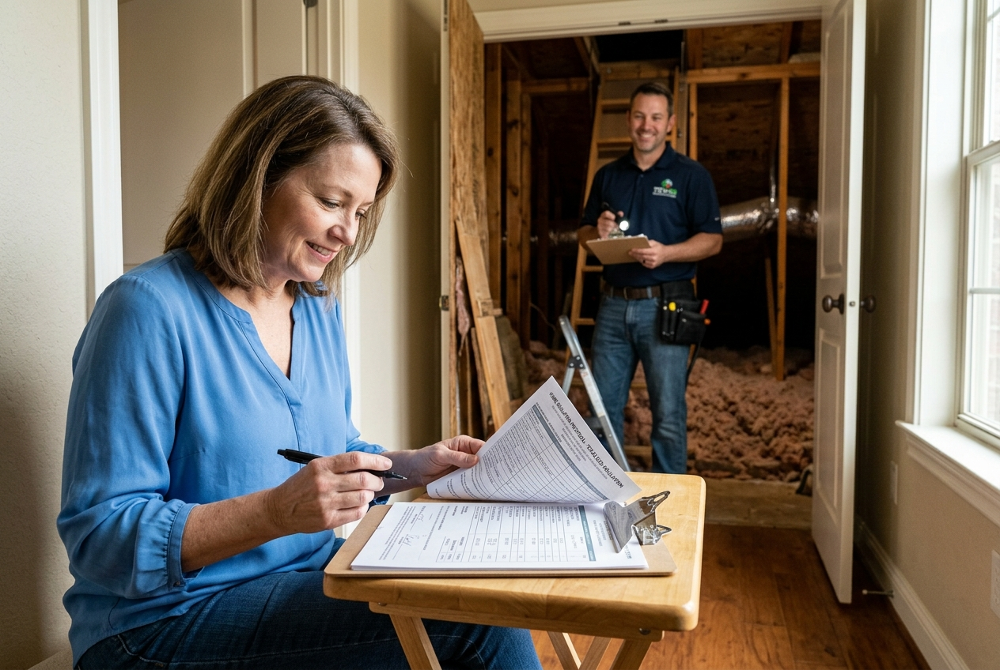

Blown-in fiberglass lasts 20 to 30 years under normal conditions. In Cypress, humidity and heat accelerate settling. Homes built in the 1980s or 1990s with original insulation are almost always below R-20 by now and due for an upgrade.
Attic Insulation in Cypress, TX
Most Cy-Fair homes in 77429 and 77433 were built with R-11 to R-19 attic insulation, which is not enough for a Cypress summer and has settled further over 30 years. If your AC runs all day and upstairs rooms stay hot, the attic is usually the reason. We install, remove, and upgrade attic insulation for homeowners across Cypress and the Cy-Fair area, starting with a free attic inspection and a written estimate before any work begins.
01
Licensed and Insured in Texas
02
Written Estimate Before Any Work
03
Confirmed Arrival Window
Insulation Services in Cypress, TX
Most Cypress homes need more than one type of insulation work. A home that needs blown-in on the attic floor may also need air sealing at the penetration points, injection foam in older brick walls, or a ventilation check before the heat problem is fully solved. Here's what we offer, and how we decide what your home needs.
 Spray Foam Insulation
Spray foam seals air gaps and adds R-value in one step. Open cell is used for attic floors and interior walls. Closed cell is denser and used on roof decks and in areas where moisture resistance is needed.
Explore →
Spray Foam Insulation
Spray foam seals air gaps and adds R-value in one step. Open cell is used for attic floors and interior walls. Closed cell is denser and used on roof decks and in areas where moisture resistance is needed.
Explore →
 Injection Foam Insulation
Injection foam is installed into existing wall cavities through small holes without removing drywall. It is used in finished walls where blown-in or batt insulation is not an option.
Explore →
Injection Foam Insulation
Injection foam is installed into existing wall cavities through small holes without removing drywall. It is used in finished walls where blown-in or batt insulation is not an option.
Explore →
 Blown-In Attic Insulation
The most common upgrade for Cypress homes. Blown-in fiberglass covers the full attic floor evenly, fills around obstructions, and brings most homes from under R-20 to R-38 in a single visit.
Air Sealing
Air sealing closes gaps around penetrations, attic hatches, recessed lights, and HVAC boots before insulation is installed. Without it, insulation alone does not stop conditioned air from escaping.
Blown-In Attic Insulation
The most common upgrade for Cypress homes. Blown-in fiberglass covers the full attic floor evenly, fills around obstructions, and brings most homes from under R-20 to R-38 in a single visit.
Air Sealing
Air sealing closes gaps around penetrations, attic hatches, recessed lights, and HVAC boots before insulation is installed. Without it, insulation alone does not stop conditioned air from escaping.
Why Attic Insulation Matters for Cypress Homes
Attic insulation directly affects how much you pay to cool your home in Cypress. Most Cy-Fair homes in 77429 and 77433 were built with R-11 to R-19 insulation along the US-290 and SH-249 corridors, and today's minimum for Harris County is R-38. That gap means your AC is working harder than it needs to every summer. Hurricanes Ike and Harvey made it worse in many homes. Insulation that absorbed moisture loses R-value and can hold mold for years without showing any visible sign.
Signs Your Cypress Attic Needs Attention
Upstairs rooms that stay hot even when the AC is running, AC units that cycle on and off more often than usual through July and August, dust coming through vents, rodent droppings or a musty smell when you open the attic hatch. Any one of these is worth a free walkthrough. Most Cy-Fair homeowners who call us find the attic insulation is either well below R-20, moisture-damaged, or both.
How do you know when attic insulation needs replacing in Cypress TX?
Check for bare or thin insulation in the attic, hot rooms on the top floor, high cooling bills compared to neighbors in similar homes, or any history of roof leaks or flooding. If the home was built in the 1980s or 1990s and the insulation has never been replaced, it likely needs upgrading.
What R-Value Does a Cypress Attic Need?
Most Cypress TX attics need R-38 at minimum. Harris County falls in IECC Climate Zone 2A, and the U.S. Department of Energy recommends R-38 to R-60 for attic floors in this zone. Most homes built in the 1980s or 1990s measure R-11 to R-19 after decades of settling. Some homeowners go to R-49 on homes with large south or west-facing roof sections where the heat load is highest.
How much attic insulation does a Cypress TX home need?
R-38 is the current minimum for Harris County per IECC Climate Zone 2A. If your attic measures below R-20, upgrading to R-38 will reduce the heat load on your AC and lower monthly cooling costs. R-49 is worth considering for homes with large south or west-facing roof areas.
Attic Insulation Installation in Cypress, Texas
Blown-in fiberglass is the right choice for most Cypress TX attic floors. It adds R-value over existing insulation in one visit without requiring removal in most cases. For homes where the existing insulation is wet, contaminated, or too compressed to build on, we remove it first and reinstall. We also install spray foam for air sealing at penetration points, and fiberglass batts for wall cavities and floor framing in new construction and re-insulation jobs.
01
Blown-In Insulation
Blown-in fiberglass fills around obstructions and reaches the corners and eaves of the attic floor. Most homes in 77429 and 77433 go from under R-20 to R-38 in a single job.
02
Fiberglass Batt Insulation
Fiberglass batts fit between wall studs and floor joists. They are used in new construction and in specific re-insulation jobs where the framing is exposed. For most existing Cy-Fair attic floors, blown-in covers more area more evenly than batts.
03
Spray Foam Insulation, Open Cell and Closed Cell
Spray foam seals air gaps and adds R-value in one step. Open cell is used on attic floors and interior walls where air sealing is the primary need. Closed cell is denser, costs more, and is used on roof decks and in areas where moisture resistance matters. Spray foam costs more per square foot than blown-in, but for attic hatches, knee walls, and rim joists it is usually the right call.
Is spray foam insulation good for attics in Cypress TX?
Spray foam is the right choice for specific applications like attic hatches, knee walls, and rim joists where air sealing matters most. For the main attic floor, blown-in fiberglass reaches R-38 at lower cost and works well in the Cypress climate. Most Cy-Fair homes need blown-in on the floor and spray foam only at the penetration points.
Blown-In or Spray Foam: Which Does a Cypress Attic Need?
| Blown-In Fiberglass | Spray Foam | |
|---|---|---|
| Best for | Attic floors, top-off jobs | Hatches, knee walls, rim joists, roof deck |
| R-value per inch | R-2.2 to R-2.7 | R-3.7 (open cell) to R-6.5 (closed cell) |
| Air sealing | No, needs separate sealing | Yes, seals and insulates in one step |
| Cost | Lower | Higher |
| Typical Cypress use | Most attic floor upgrades | Penetrations and specialty areas |
Is blown-in insulation better than spray foam in Cypress TX?
For attic floors, blown-in fiberglass reaches R-38 at lower cost and is the right choice for most Cy-Fair homes. Spray foam is better for air sealing at penetration points and for specific areas like knee walls and attic hatches. Most jobs use blown-in on the floor and spray foam only where air sealing is the priority.

Attic Insulation Removal in Cypress, TX
Wet insulation, rodent damage, or material compressed past the point where it holds R-value needs to come out before anything new goes in. We vacuum out old insulation, remove contaminated material, and treat the attic before reinstalling. Many Cypress homes built in the 1980s or 1990s that have never had insulation work fall into at least one of these categories.
01
When Removal Is Needed Before Re-Insulation
Old insulation that looks intact from the hatch can still be a problem. Moisture from a roof leak or Harvey-era flooding compresses fiberglass and drops its R-value. Rodent activity leaves droppings and nesting material that hold bacteria. Blown-in vermiculite from pre-1980s homes may contain asbestos. We check for all of these during the free inspection before we quote any removal job.
02
What Attic Insulation Removal Costs in Cypress TX
Removal is priced by the square footage of the attic and the depth of existing material. A 1,500 square foot attic with 6 inches of old blown-in typically runs between $1,200 and $2,000 for removal and disposal. Contaminated material costs more to handle. We give you an itemized written estimate before any work starts.
Attic Insulation Cost in Cypress, TX
Blown-in fiberglass in a Cypress attic runs $0.90 to $1.50 per square foot for a straight top-off job. If old insulation needs to come out first, expect $1.80 to $2.80 per square foot combined for removal and reinstall. Spray foam at penetration points is priced separately. Most attic jobs in Cypress fall between $1,800 and $4,500 total depending on size and scope. You get a written, itemized estimate before any work begins.
| Service | Cost per sq ft |
|---|---|
| Blown-in fiberglass (top-off) | $0.90 to $1.50 |
| Blown-in fiberglass (with removal) | $1.80 to $2.80 |
| Spray foam (open cell) | $1.50 to $2.50 |
| Spray foam (closed cell) | $3.00 to $5.00 |
| Old insulation removal only | $1.00 to $1.50 |
What Affects the Cost of Attic Insulation in Cypress, TX
Three things drive the price: attic square footage, how much existing insulation needs to be removed or built over, and which materials the job requires. A job that only adds depth with blown-in insulation costs the least. A job that needs contaminated material removed, the attic treated, and spray foam at the penetration points before blown-in goes in will cost more. We quote each of these as separate line items.
Is Attic Insulation Worth the Cost in Cypress TX?
For most Cy-Fair homes, yes. A home running R-11 to R-19 in a Cypress summer is paying more each month to cool the same space than a home at R-38. Most homeowners see lower cooling bills within the first billing cycle after the upgrade. The payback period depends on your current insulation level, attic size, and how much your AC runs.

How Our Attic Insulation Process Works
Every job starts with a free attic inspection. We measure current R-value, check for moisture damage, rodent activity, and air leaks at the penetration points, and give you a written report with a line-item estimate before any work is scheduled. No pressure to book on the same day. On install day, we complete the job in a single visit for most Cypress attics.
01
Written Estimate Before Any Work
The estimate lists every item: removal if needed, air sealing, insulation material, target R-value, and labor. Nothing is added on the day of the job without your approval.
02
Install Day in Cypress
We set up floor protection, run the blower hose to the attic, and work to the depth specified in your estimate. We measure and confirm finished depth before we leave.
Attic Insulation FAQs for Cypress Homeowners
These are the questions Cypress homeowners ask most before scheduling an inspection. If yours is not here, ask us directly and we will answer it before you book.
Insulation slows heat transfer but does not control humidity on its own. Air sealing at the penetration points reduces the amount of humid outside air entering the attic. Together, insulation plus air sealing reduce both heat load and moisture infiltration.
Most Cypress attic jobs take half a day. A 1,500 square foot attic with a straight blown-in top-off is typically done in 3 to 4 hours. Jobs that include removal or spray foam at the penetration points take longer.
You do not need to leave. We work in the attic with the hatch open. There is dust involved during blown-in installation, so if anyone in the home has respiratory sensitivities, staying out during the job is a reasonable precaution.
It depends on your current R-value and how much your AC runs. A home going from R-11 to R-38 in a Cypress summer will see a measurable drop in cooling costs. Most homeowners notice it within the first billing cycle after the upgrade.
Attic Insulation Service Area in Cypress, TX
We are an attic insulation contractor based in Tomball on Hwy 249, about 10 minutes from Cypress. We serve homeowners across Cypress and the surrounding areas. Most jobs are scheduled within the same week. Call us to confirm availability for your area.